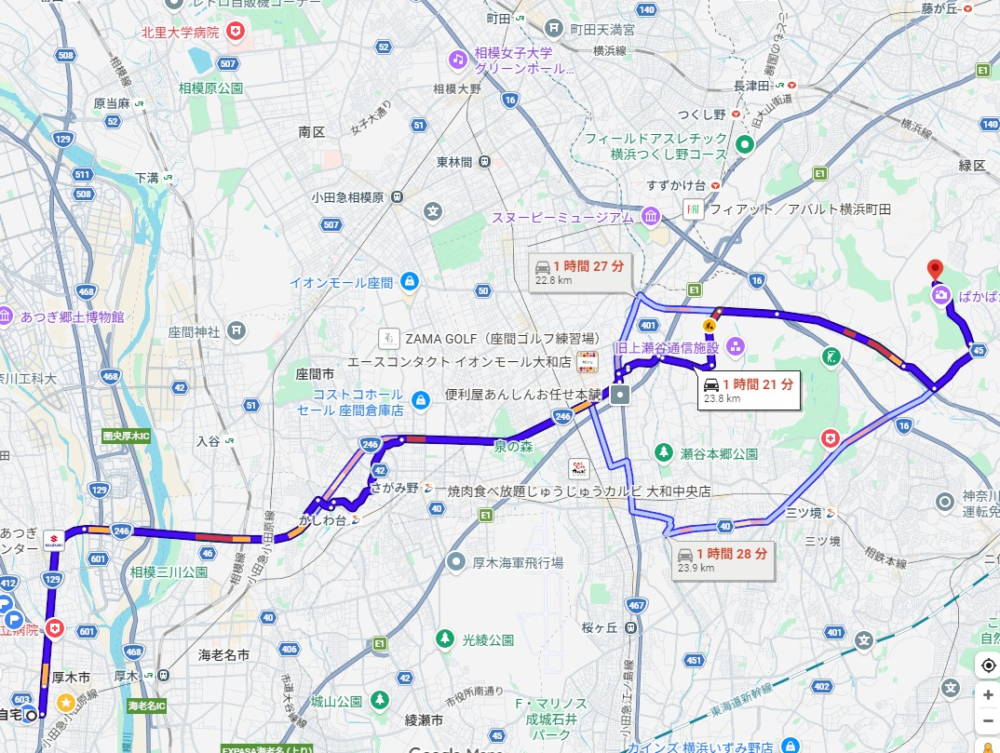

ズーラシア
概要
ホームページ
ここ
開園時間
9:30～16:30（入園は16:00まで）
入園料
800円/人
園内マップ
ここから
駐車場
場所: 正門駐車場（常時）、北門駐車場（土日祝・長期休み期間のみ）。休日・GW：非常に混雑するため、朝の早めの時間帯（開園前）の到着が推奨（開園1時間前（8:30頃））
料金: 普通車1日1回1,000円
車で行くルート
時間は4月20日(月) 7:00出発の場合です。

周辺
里山ガーデン（季節限定の大花壇）
～5月6日。ズーラシア北門から徒歩15〜20分ほど
ズーラシア隣接、春・秋に開放される巨大ガーデン。花の大パノラマが圧巻。
ホームページ
フォレストアドベンチャー・よこはま
ズーラシアから約2.5km
樹上アスレチック。大人も本気で楽しめる。
ホームページ
トレイルアドベンチャー・よこはま
ズーラシアから約2.5km
森の中を走るマウンテンバイク体験。
ホームページ
四季の森公園
ズーラシアから約3km以上
広大で自然豊か、散策・写真撮影に最適。
ホームページ
横浜動物の森公園
ズーラシアに隣接する自然公園。静かに歩きたい人向け。
ホームページ
竜泉寺の湯（鶴ヶ峰）
ズーラシアから車で10分ほど。岩盤浴・炭酸泉が人気。
ホームページ
Copilotの提案ルート
① 朝：ズーラシア（混雑前）
↓
② 昼：里山ガーデンで花散歩（季節限定）
↓
③ 午後：四季の森公園で静かに散策
↓
④ 帰りに竜泉寺の湯でリラックス